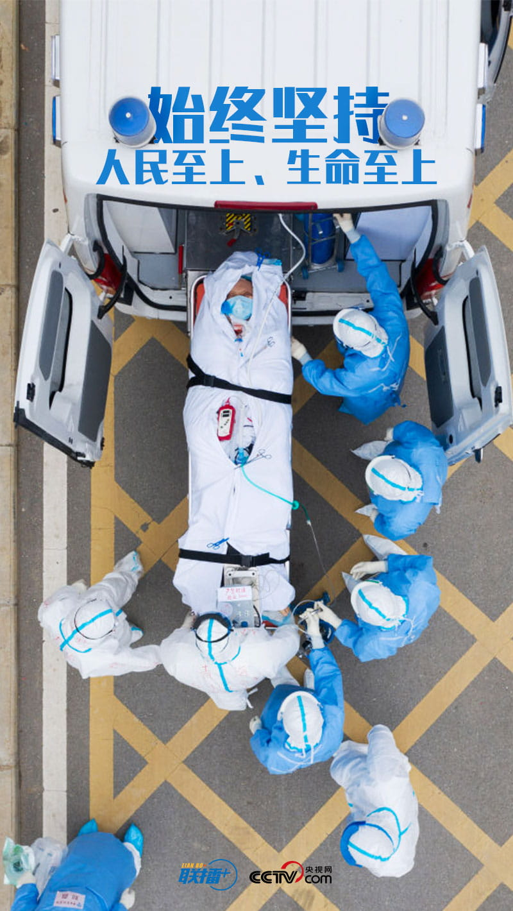
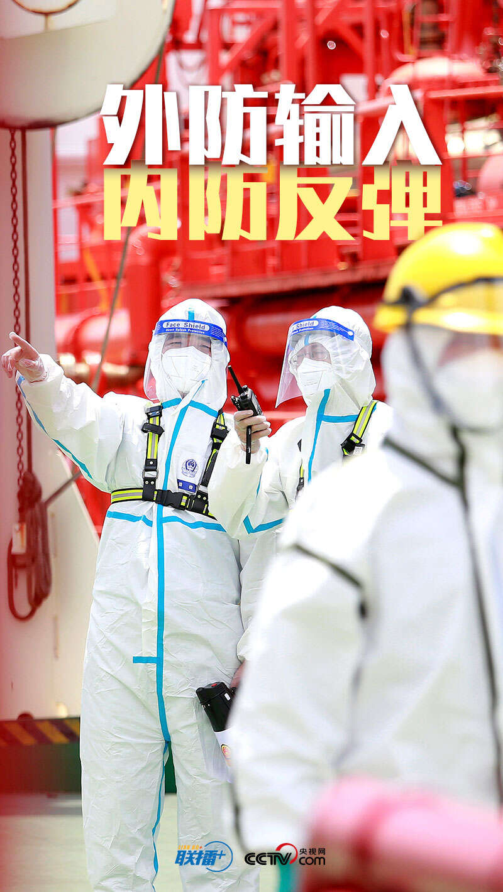
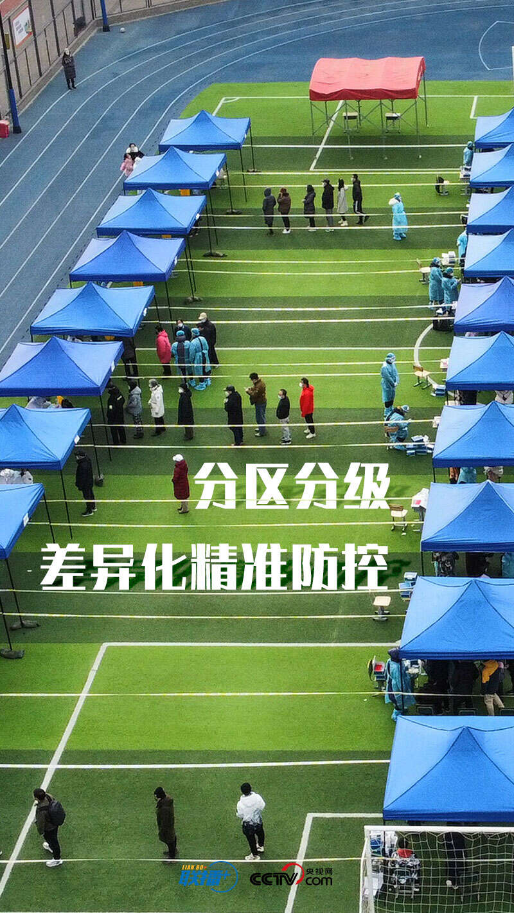
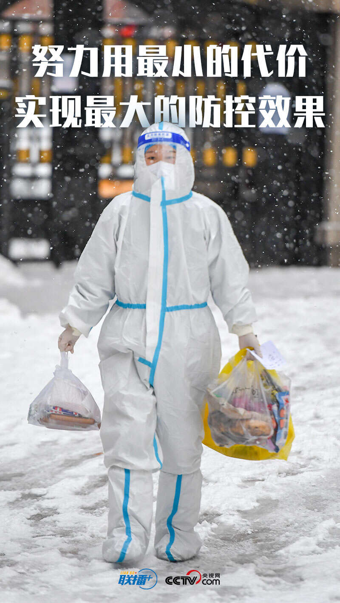

联播+丨10句话读懂总书记疫情防控科学部署
日期: 2022年04月07日17:19 信息来源:中央广播电视总台央视网
作者：胡永秋、杨光宇
奥密克戎变异株来势汹汹，截至4月5日，已波及我国29个省份。我国本土疫情总体呈现流行范围 广、规模性疫情与散发疫情交织、外溢病例及续发疫情多发等特点。">
习近平总书记始终关注着疫情演变态势，牵挂着人民群众的身体健康和生命安全。“突出口岸地区疫情防控这个重点，守住不出现疫情规模性反弹的底线。” 今年3月5日，在参加十三届全国人大五次会议内蒙古代表团审议时，总书记对疫情防控提出明确要求。">
4天后，针对在多地扩散的疫情，总书记又作出重要批示：当前疫情发展很快，散发面广，染疫人数大增， 务必责成各有关部门和地方从严从紧开展防控工作。"
3月17日，中共中央政治局常务委员会召开会议，部署从严抓好疫情防控工作，从思想上、行动上对当前 和下一步我国抗疫工作进行全面动员和周密安排。
“始终坚持人民至上、生命至上”
“尽快遏制疫情扩散蔓延势头”……
央视网《联播+》提炼总书记在中共中央政治局常务委员会会议上的讲话要点，与您一起细读、领会。
   